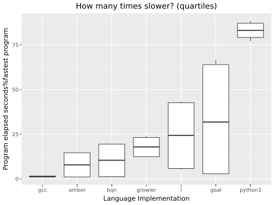

Fastest
contributed programs, grouped by programming language implementation
shamelessly borrowed from The Computer Language Benchmarks Game

| × | source | secs | mem | gz | cpu secs |
|---|---|---|---|---|---|
| 1.00 | knucleotide.amber.k | 0.0425 | 25,022 | 501 | 0.0401 |
| 1.08 | knucleotide.bqn | 0.0458 | 76,055 | 1,177 | 0.0423 |
| 1.49 | knucleotide.c | 0.0632 | 23,646 | 1,688 | 0.0616 |
| 2.77 | knucleotide.goal | 0.118 | 163,095 | 281 | 0.183 |
| 4.14 | knucleotide.l.q | 0.176 | 549,687 | 468 | 0.374 |
| 4.72 | knucleotide.growler.k | 0.201 | 55,161 | 503 | 0.198 |
| 86.9 | knucleotide.py | 3.7 | 99,377 | 724 | 3.66 |
| 1.00 | nbody.c | 0.0423 | 2,503 | 1,303 | 0.0409 |
| 15.0 | nbody.amber.k | 0.635 | 25,809 | 958 | 0.633 |
| 18.8 | nbody.growler.k | 0.797 | 4,243 | 960 | 0.788 |
| 20.9 | nbody.bqn | 0.883 | 9,310 | 1,153 | 0.872 |
| 44.5 | nbody.l.k | 1.88 | 12,222 | 945 | 1.89 |
| 66.3 | nbody.goal | 2.81 | 15,127 | 1,034 | 3.14 |
| 81.4 | nbody.py | 3.44 | 15,229 | 1,411 | 3.42 |
The benchmark is run on an i5-1135g7 (tiger lake, some avx512) and each process is limited to 1GB of memory
These are the descriptions for nbody and knucleotide benchmarks.
Python and gcc are included in the game as the languages to beat.
Please propose interesting new benchmarks -- maybe more from The Computer Language Benchmarks Game.
Please contribute more programs for your favourite array language. Note there is only one rule: don't use libraries other than the c/c++ standard libraries or python's sys, multiprocessing and math. There is no restriction on algorithms, unlike the CLBG.